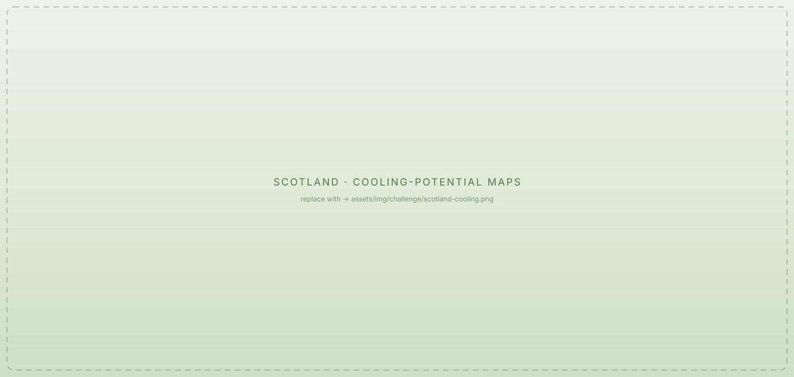
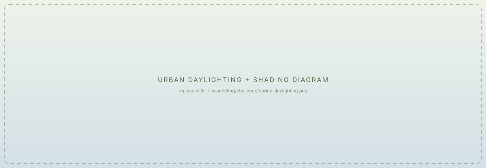
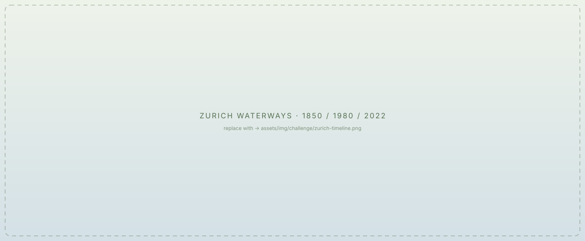

Scotland's Rural Rivers: Overexposed and Overheated
In the Scottish countryside, many rivers lack riparian forests, leaving them overexposed to sunlight, especially in summer. This raises water temperatures, threatening cold-water species like Atlantic salmon (Salmo salar).
Research shows that riparian woodland cover within a 25 m buffer can reduce peak river temperatures by approximately 2 °C, with the most vulnerable rivers in northern Scotland, the northwest, and the Cairngorm Mountains — areas with minimal tree cover.
Restoring riparian woodlands could not only cool these waters but also stabilise riverbanks and enhance ecosystem services.

Zurich's Urban Rivers: Buried Streams and Fragmented Ecosystems
In contrast, Zurich's urban rivers face a different set of challenges. Despite being a pioneer in river daylighting — restoring culverted rivers to open channels — one third of Zurich's waterways remain underground. These culverts disrupt natural hydrological and ecological processes, fragment habitats, and limit biodiversity. While past efforts have successfully revived some urban streams, the remaining buried sections continue to hinder riverine connectivity and ecosystem function.


The Challenge of Multi-Stakeholder Coordination
In both cases, river restoration is a shared goal, but implementation is complex due to the diverse landscapes these rivers traverse. Whether in rural Scotland or urban Zurich, rivers flow through land owned or managed by multiple stakeholders — including farmers, local communities, conservation groups, and governmental agencies. Each of these groups has distinct interests, ranging from agricultural productivity to urban infrastructure, recreational use, and ecological conservation.
Balancing these competing demands requires an inclusive, participatory approach to river restoration. Yet stakeholders often struggle to make meaningful contributions due to limited ecological knowledge and planning experience, making it challenging to evaluate alternatives and anticipate outcomes. This is exactly the gap re•flect is built to close.
Mapping the cooling potential: riparian woodland in Scotland
An interactive research write-up on where woodland shading can cool Scotland's rivers the most.